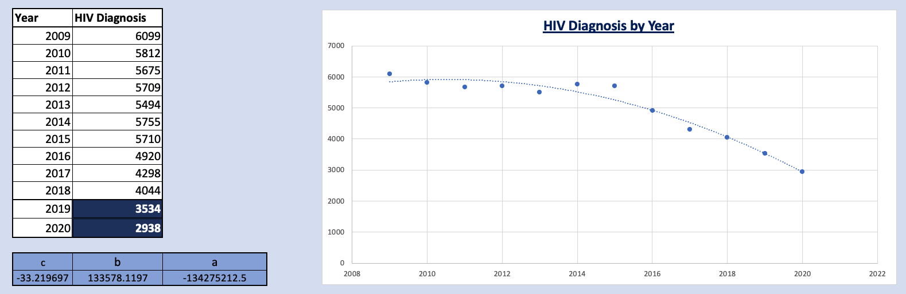
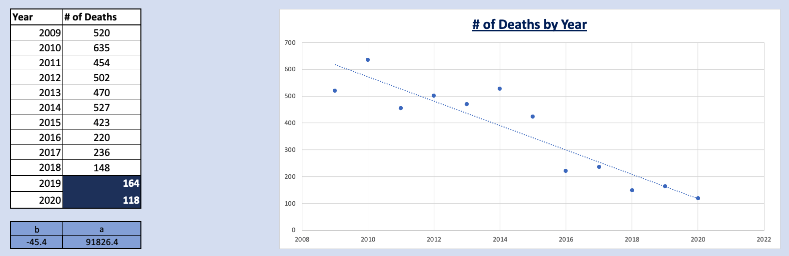
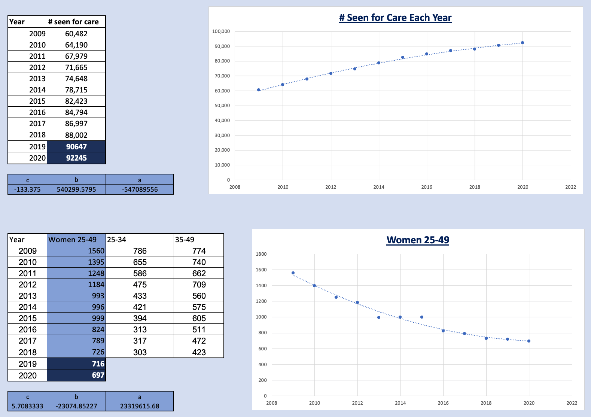

MAXIMISING HIV PREVENTION IN 2020 GIVEN BUDGET CONSTRAINTS
Problem Brief
Provide suggestions for how resources should be allocated between different HIV prevention strategies: behavioural strategies, strategies aimed at injecting drug users (IDUs) and strategies aimed at preventing mother-to-child (MTC) transmission in 2020. The total budget is allocated for HIV treatment and prevention. All persons living with HIV must be treated and only the remainder of the funding can be used for HIV prevention. This must be allocated appropriately to prevent the maximum number of HIV cases.
Solution Report
Goal: Maximise HIV prevention in 2020 given budget constraints by fitting an appropriate statistical or forecasting model to the following series: number of new HIV infections, number of HIV deaths, number of people seen for HIV care in Excel
Used Excel's Solver Function to create an HIV prevention strategy.
It was predicted that in 2020 HIV diagnosis and related deaths would decrease to 2,938 and 118 cases respectively, and those receiving treatment would increase to 92,245 people. The cost of treating each person is £10,000/year, and treatment must be provided to every person seeking it. Given a proposed budget of £900M for HIV treatment and prevention, the cost of treatment exceeds the proposed budget by £22,450,000 - the budget is insufficient. Based on predicted numbers of those seeking treatment and prevention objectives, the following budget ranges are suggested:
| Treatment & Prevention Method | Minimum Cumulative Budget | Maximum Cumulative Budget |
|---|---|---|
| Provide healthcare for all those seeking treatment | £922,450,000 | £922,450,000 |
| Injecting Drug Users (IDU) | £922,450,100 | £923,850,000 |
| Mother to Child (MTC) | £923,850,500 | £924,198,500 |
| Behaviour | £924,199,800 | £950,198,500 |
The range between the 'Minimum Cumulative Budget' and 'Maximum Cumulative Budget' is the amount needed to treat 1 case up to all cases for each Prevention Method (and all Treatment and Prevention Methods listed before it). Considering that the main objective is to maximise averting new HIV cases, preference was given to prevention methods in the order of Injecting Drug Users, Mother to Child, and lastly Behaviour Prevention. Maximise averting new HIV cases meant addressing the cheapest prevention method first and then systematically moving onto the next method in increasing order of cost per prevented case. The cheaper the cost of an individual case, the more cases that can be averted.
Even though Behavioural Prevention has the highest cost per prevention method and prioritizing it seems to deviate from the main objective, there is a higher success rate of averting those who have been exposed through behaviour. In 2009, 91% of newly diagnosed cases said they were exposed to HIV through behavioural contact; in 2018, that metric decreased to 78%. In comparison, both MTC and IDU transmission did not see much distribution change. IDU and MTC transmission target niche subgroups while behavioural addresses a much wider group within the population. Behavioural Prevention methods can have carried-forward effects - for example if a young female were taught to be safe while sexually active, she can avoid contraction and the potential to transfer it to her offspring, therefore lowering that budget needed for MTC Prevention in the future. There is also an opportunity to segment behavioural prevention costs, for example sex education in schools. Teaching adolescents to be aware and cautious of contracting HIV can potentially be cheaper than educating those who currently are not part of an education system.
Over a 10-year period of 2009 to 2018 HIV diagnosis has decreased by 34.69%, deaths due to HIV have decreased 71.54%, and those living with HIV who are receiving treatment has increased 45.54%. These changes are a direct result of improved medications and the decrease in stigma against being HIV positive and prevention strategies.
In summary, the minimum budget needed to only treatment those seeking HIV-related healthcare is £922,450,000, and the maximum needed to potentially prevent all expected new cases of HIV is £950,198,500. When the budget is incrementally increased, to maximise the number of cases averted the prevention strategies must be addressed in the order IDU, MTC, then Behavioural, addressing all cases within each before moving onto to the next. Priority should not be given purely based on maximising immediately avertable cases, and weight should be added to the different prevention methods to add another layer of priority.
Assumptions
Assumption 1: Probable Exposure: Behavioural would be unaffected if unknown exposure became known, and the decrease in HIV as an outcome of Behavioural Exposure is directly related to Prevention Methods focusing on reducing behavioural exposure.
| Probable Exposure | 2009 | 2010 | 2011 | 2012 | 2013 | 2014 | 2015 | 2016 | 2017 | 2018 |
|---|---|---|---|---|---|---|---|---|---|---|
| Behavioural | 91% | 91% | 92% | 91% | 88% | 88% | 83% | 83% | 80% | 78% |
| IDU | 2% | 2% | 2% | 2% | 2% | 2% | 3% | 2% | 2% | 2% |
| MTC | 2% | 2% | 2% | 1% | 2% | 1% | 1% | 1% | 1% | 1% |
| Other | 1% | 1% | 0% | 0% | 1% | 1% | 1% | 1% | 1% | 1% |
| Unknown | 5% | 5% | 4% | 6% | 8% | 8% | 13% | 14% | 16% | 18% |
Table 2: The distribution of probable exposure over the last 10 years
Assumption 2: Using women diagnosed between ages 25-49 for Mother to Child transmission assumes that every woman within that age range intends to have children, and also excludes women 15-24 who are capable of bearing children.
Assumption 3: Deaths per year is influenced by 1) how many people are currently HIV positive/were previously diagnosed, 2) how many are seen for care, 3) the quality of care, 4) CD4 levels at the time of diagnosis. Strictly using past death rate data does not take into account any of the other influencing factors that may increase or decrease the death rate.
Assumption 4: Using predictive models that solely use a singular dataset ignores any external factors (such as potential epidemics and cultural change that can influence future numbers).
Assumption 5: The prevention strategy assumes that everyone within that label will seek out prevention methods and needs to budgeted for.
Predictive Models
Quadratic & Linear models were used to predict 2019 and 2020 numbers for number of new HIV Diagnosis, number of Deaths, the number of those seen for care, and women between the ages of 25-49 diagnosed with HIV
Dataset: New Diagnosis
Linear, Quadratic, Polynomials of Order 3 and 4, and Logarithmic models were tested to create the model New Diagnosis. The Linear and Logarithmic models produced near identical results, while the Quadratic and Polynomial Models produced results non-distinct from one another when review predictions up to 2020. Due to the similarities creating 2 subsets within the model, the Linear and Quadratic models were further tested by comparing the sum of squares of the residual values. The Quadratic Model's sum of squares was half that of the Linear model, which led to the selection of using it to predict years 2019 and 2020. However, this model is invalid for predicting results after year 2020 (as the steep decline quickly shows negative numbers). Likewise models of higher order exponentially decreased at much faster rates.
Dataset: Death
Linear and Quadratic models were created and tested to predict future death rates. Even though the Quadratic model's sum of squares produced better results for predicting the existing years 2009 to 2018, the model predicted negative results for the year 2020 (which would have also been true for polynomial models of higher order). This leaves the Linear model as the more suitable one for predicting data for years 2019 and 2020.
Dataset: Treatment & Women Diagnosed between ages 25-49
While modeling Diagnosis it became clear that higher order polynomials produced better predictions for existing years (2009-2018), but generally performed poorly at predicting future dates. Additionally, graphed data for treatment and women diagnosed exhibited near-linear plots, so an assumption was made that models of higher polynomials would not produce better predictions for the years 2019 and 2020. Consequently, only Quadratic and Linear models were used to model datasets for Treatment and Women Diagnosed between ages 25-49. In both cases the Quadratic model produced better results for the sum of squares. For Treatment Models the sum of squares for the Quadratic model was 22% that of the Linear model, and for Women Diagnosed between ages 25-49 sum of squares for the quadratic model was half that of the linear model.
